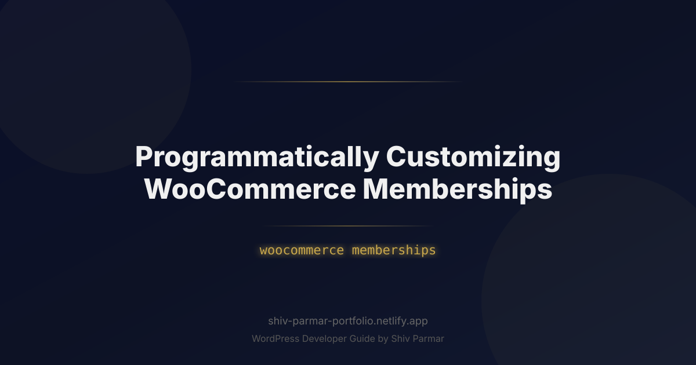

Programmatically Customizing WooCommerce Memberships
Table of Contents
Out-of-the-box plugins can take your e-commerce store a long way, but what happens when standard settings hit a brick wall? You run a thriving digital storefront using WooCommerce, managing hundreds—or thousands—of subscribers. Everything seems fine until a client asks for a complex automation workflow: "Can you automatically grant a membership when a user fills out a specific form, or expire their access the moment they change a custom user role?" Suddenly, standard dashboard settings simply aren't enough.
This is where the true power of WordPress development shines. By diving into the backend architecture of WooCommerce Memberships, you unlock infinite possibilities for automation, personalization, and seamless user experiences. Whether you are building a custom learning management system, a private members-only directory, or a tiered content subscription site, mastering programmatic control over your membership site gives you absolute authority over your business logic.
In this guide, we will explore the foundational hooks, functions, and best practices required to build robust, scalable, and tailored membership experiences using code. Get your text editor ready as we dive deep into the world of programmatic WooCommerce customization.
What is Programmatic Customization in WooCommerce Memberships?
Programmatic customization refers to the practice of interacting with, modifying, and extending plugin functionality using PHP, WordPress hooks (actions and filters), and the underlying database architecture, rather than relying solely on graphical user interfaces (GUIs). When applied to woocommerce memberships, it means writing custom code snippets or plugins to handle user access rules, plan assignments, expiration logic, and restriction behaviors dynamically.
While the native WooCommerce Memberships plugin provides a stellar admin interface for manually creating plans, assigning users, and restricting content, it operates on generalized rules. Programmatic customization bridges the gap between rigid software boundaries and your unique business requirements. Instead of manually clicking through the WordPress dashboard to grant a user access to an exclusive tier, your code can listen for specific trigger events—such as a custom form submission, an API webhook, or a specific user metadata update—and execute the membership assignment instantly.
At its core, this approach leverages the robust API provided by the memberships plugin. Developers can tap into class methods, custom post types, and database tables to query user access, programmatically create memberships, alter restriction messages, and integrate seamlessly with third-party systems like CRM platforms, custom learning management systems, or external invoicing tools.
Why Programmatic Customization Matters in 2026
The digital marketplace has evolved. Consumers and B2B clients alike expect hyper-personalized experiences, instant provisioning, and zero friction. In 2026, running a membership site requires more than just locking pages behind a paywall; it demands intelligent, automated ecosystems that respond in real-time to user behavior.
Relying exclusively on manual administrative tasks or default plugin behaviors introduces bottlenecks that can stall business growth. Here is why programmatic customization is essential for modern WordPress administrators and developers:
| Traditional GUI Approach | Programmatic Approach (2026 Standard) |
|---|---|
| Manual user assignment via the WP Admin panel. | Automated assignment via custom registration logic, APIs, or user actions. |
| Rigid, one-size-fits-all expiration notices and rules. | Dynamic expiration extensions based on engagement, usage, or external billing systems. |
| Standard checkout flows for all membership products. | Conditional upsells, dynamic pricing rules, and tailored cart validations. |
| Siloed data that requires manual syncing with external CRMs. | Real-time programmatic webhooks pushing membership status changes instantly. |
Furthermore, automation reduces human error. When a member upgrades their plan, renews early, or triggers a refund, programmatic handlers ensure that database records, user roles, and content access permissions stay perfectly synchronized without requiring an administrator to touch a keyboard.
Step-by-Step Guide to Customizing WooCommerce Memberships
To effectively customize WooCommerce Memberships via code, you need to understand how to interact with the plugin's underlying API. Below is a comprehensive, step-by-step walkthrough detailing how to perform the most common programmatic tasks.
1. Checking If a User Has an Active Membership
Before displaying restricted content or executing custom logic, you often need to check whether a specific user holds an active membership for a particular plan. The memberships plugin provides helper functions that make this clean and straightforward.
You can use the wc_memberships_is_user_active_membership() function to verify access:
/**
* Check if the current user has an active membership for a specific plan ID.
*/
function my_custom_check_user_membership() {
if ( ! is_user_logged_in() ) {
return false;
}
$user_id = get_current_user_id();
$plan_id = 123; // Replace with your actual Membership Plan ID (Post ID)
if ( function_exists( 'wc_memberships_is_user_active_membership' ) ) {
if ( wc_memberships_is_user_active_membership( $user_id, $plan_id ) ) {
// The user has an active membership
return true;
}
}
return false;
}
This function queries the database efficiently, checking user meta and membership post statuses to ensure the user's access is currently valid, unpaused, and not expired.
2. Programmatically Granting a Membership to a User
Sometimes you need to grant access outside of a standard WooCommerce checkout flow—such as after a manual bank transfer, a free trial signup form submission, or an administrative import. You can achieve this using the wc_memberships_create_user_membership() function.
Here is how you can write a custom function to assign a membership plan programmatically:
/**
* Programmatically grant a membership to a user.
*
* @param int $user_id The ID of the user.
* @param int $plan_id The ID of the membership plan post.
*/
function my_grant_membership_to_user( $user_id, $plan_id ) {
if ( ! function_exists( 'wc_memberships_create_user_membership' ) ) {
return false;
}
// Check if user already has a membership for this plan to avoid duplicates
if ( wc_memberships_is_user_membership( $user_id, $plan_id ) ) {
return new WP_Error( 'membership_exists', 'User already has a membership for this plan.' );
}
$args = array(
'user_id' => $user_id,
'plan_id' => $plan_id,
'status' => 'active', // Options: active, complimentary, pending, paused, cancelled, expired
);
$user_membership = wc_memberships_create_user_membership( $args );
if ( is_wp_error( $user_membership ) ) {
// Handle error logging
error_log( 'Failed to create membership: ' . $user_membership->get_error_message() );
return false;
}
return $user_membership;
}
When this code runs, it creates the corresponding user membership post entry in the database, associates it with the specified user and plan, and immediately activates their content privileges.
3. Hooking Into Membership Creation and Expiration Events
Events trigger actions. Whether you want to send a custom Slack notification, update user metadata, or sync data to an external CRM when a membership status changes, WordPress action hooks provide the ideal entry points.
The memberships plugin fires custom actions during the lifecycle of a membership. For instance, you can listen for when a user membership becomes active:
/**
* Execute custom logic when a user membership becomes active.
*
* @param WC_Memberships_User_Membership $user_membership
*/
function my_custom_on_membership_activated( $user_membership ) {
$user_id = $user_membership->get_user_id();
$plan_id = $user_membership->get_plan_id();
// Example: Add a custom user meta tag upon activation
update_user_meta( $user_id, '_has_active_vip_access', 'yes' );
// Send custom welcome analytics or trigger external APIs here
}
add_action( 'wc_memberships_user_membership_activated', 'my_custom_on_membership_activated', 10, 1 );
Similarly, you can listen for expiration events to downgrade user roles or revoke auxiliary permissions:
/**
* Execute custom logic when a user membership expires.
*
* @param WC_Memberships_User_Membership $user_membership
*/
function my_custom_on_membership_expired( $user_membership ) {
$user_id = $user_membership->get_user_id();
// Remove custom user meta tag upon expiration
delete_user_meta( $user_id, '_has_active_vip_access' );
// Optionally downgrade the user WordPress role
$user = new WP_User( $user_id );
$user->set_role( 'subscriber' );
}
add_action( 'wc_memberships_user_membership_expired', 'my_custom_on_membership_expired', 10, 1 );
4. Customizing Restriction Messages and Fallbacks
By default, when a non-member tries to view restricted content, WooCommerce Memberships displays a standard restriction message or redirect. However, client requirements often dictate tailored restriction handling based on the specific content type or user status.
You can use filters to modify the restriction message programmatically:
/**
* Customize the restricted content message for specific plans or pages.
*
* @param string $message The default restriction message.
* @param array $args Additional context arguments.
*/
function my_custom_restriction_message( $message, $args ) {
// Check if we are dealing with a restricted post
if ( isset( $args['post'] ) && 1500 === $args['post']->ID ) {
$message = '<div class="custom-alert">This is an exclusive masterclass document. You must be an elite subscriber to view this content. <a href="/pricing">Upgrade your plan today</a>.</div>';
}
return $message;
}
add_filter( 'wc_memberships_message_restricted_content', 'my_custom_restriction_message', 10, 2 );
This level of tailoring ensures your users receive precise calls-to-action that match the context of the page they are trying to visit.
Best Practices for Programmatic Customization
Writing code that interacts with e-commerce and membership plugins requires meticulous care. A single syntax error or unoptimized database query can crash your checkout flow or expose sensitive data. Adhere to these best practices to ensure your custom solutions remain secure, performant, and maintainable.
1. Never Put Custom Code in Theme Files
One of the most common pitfalls for WordPress developers is placing custom PHP snippets into the functions.php file of a parent theme. If you update or switch your theme, your custom membership logic will vanish, potentially breaking active user workflows and data synchronization.
Instead, always house your custom code within:
- A dedicated custom functionality plugin created specifically for your website.
- A child theme's
functions.phpfile (only if the code is strictly presentation-related, though a custom plugin remains preferable). - An organized code snippets management plugin if you are managing smaller, modular script adjustments.
2. Always Check for Function and Class Existence
Plugins can be updated, deactivated, or removed. If you invoke a WooCommerce Memberships function—such as wc_memberships_is_user_active_membership()—and the plugin is deactivated, your site will trigger a fatal PHP error, resulting in the dreaded White Screen of Death.
Always wrap your function calls in conditional checks:
if ( function_exists( 'wc_memberships_is_user_active_membership' ) ) {
// Safe to run membership functions here
} else {
// Fallback behavior if plugin is missing or inactive
}
3. Optimize Database Queries and Avoid N+1 Problems
Membership queries can be resource-intensive, especially when looping through large user lists or checking access privileges inside archive loops. Avoid querying membership statuses inside high-frequency hooks or template loops wherever possible.
Utilize caching mechanisms—such as WordPress transients or object caching (Redis/Memcached)—when performing complex, multi-user access checks across heavy site pages.
4. Thoroughly Test in a Staging Environment
Never push custom membership code directly to a live production site. Membership logic affects billing, user accounts, and digital asset security. Always deploy your code to a staging server first, run thorough test transactions, verify edge cases (such as expired cards, refunded orders, and canceled subscriptions), and only push to production after rigorous verification.
Common Mistakes to Avoid
Even seasoned developers occasionally fall into traps when customizing membership workflows. Being aware of these common pitfalls will save you hours of debugging and prevent catastrophic data corruption.
1. Bypassing WooCommerce Order Status Handlers
When creating custom code to grant memberships outside of checkout, developers sometimes forget that memberships are frequently tied to orders and subscriptions. If you manually insert a membership post into the database without assigning it properly via the API, you risk breaking subscription renewals, expiration calculations, and automated renewal emails.
Always rely on official plugin functions like wc_memberships_create_user_membership() rather than manually writing raw SQL queries to the WordPress database posts table.
2. Ignoring Edge Cases in User Role Synchronization
Many site owners like to map WordPress user roles (e.g., "Subscriber", "Contributor", "VIP Member") directly to WooCommerce membership plans. A common mistake is updating user roles without checking existing memberships. For example, if a user holds two different membership plans and Plan A expires, a poorly written expiration hook might strip their user role entirely, even though they still maintain an active subscription under Plan B.
Always check if a user holds any remaining active memberships before stripping high-level capabilities or downgrading their core user role.
3. Neglecting Security and Permission Checks
When building custom AJAX endpoints or REST API controllers that interact with user memberships, failing to verify user authentication and authorization is a severe security risk. Always validate nonces and verify that the current user possesses the required administrative capabilities before processing programmatic membership alterations:
if ( ! current_user_can( 'manage_woocommerce_memberships' ) ) {
wp_send_json_error( 'Unauthorized access.', 403 );
}
Failing to implement these checks can allow malicious actors to script automated elevation of privileges, granting themselves premium access without payment.
By approaching the customization of WooCommerce Memberships with structured code, robust error handling, and strict adherence to WordPress development standards, you can turn a standard e-commerce store into a finely tuned, highly automated membership engine tailored precisely to your business vision.
Conclusion
Programmatically customizing WooCommerce Memberships opens up a world of possibilities for store owners looking to go beyond default plugin settings. By leveraging custom hooks, filters, and code snippets, you can build a tailored membership portal that aligns perfectly with your unique business model. Whether you need to automate member roles, create dynamic content restrictions, or integrate custom payment workflows, extending WooCommerce natively ensures a scalable, seamless experience for your subscribers.
While custom code offers ultimate flexibility, implementing it safely requires a deep understanding of WordPress architecture, database efficiency, and security best practices. Getting your membership logic right from the start is essential for delivering a reliable, high-converting environment that keeps your users engaged for the long term.
If you need an expert developer to handle complex woocommerce memberships customizations or build bespoke e-commerce solutions, Shiv Parmar is available for WordPress development work worldwide. Reach out today to discuss your project requirements and take your online business to the next level!